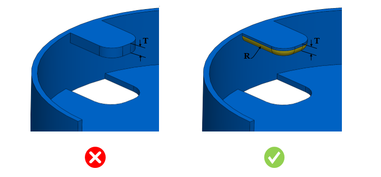

リップフィーチャーの底部半径は、ユーザーが指定した値以上である必要があります。
射出成形部品におけるリップフィーチャーには、鋭角部の発生を防ぎ、工具やコアの損傷を回避するために、一定の底部半径（工具／コアが進入する方向）が必要です。
一般的な指針として、リップフィーチャー底部の半径は、リップフィーチャーの最小肉厚の 0.5 倍とすることが推奨されます。
DFMPro はリップフィーチャーを識別し、各リップフィーチャーの底部におけるリップの肉厚および半径をチェックします。そして、リップ半径とリップ肉厚の比率を算出し、設定された比率に対して検証を行います。
ユーザーは、デフォルトで設定されている比率を編集することができます。

ここで、
R = リップの底部半径
T = リップの肉厚